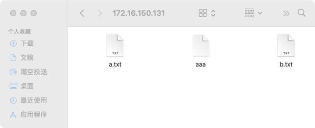
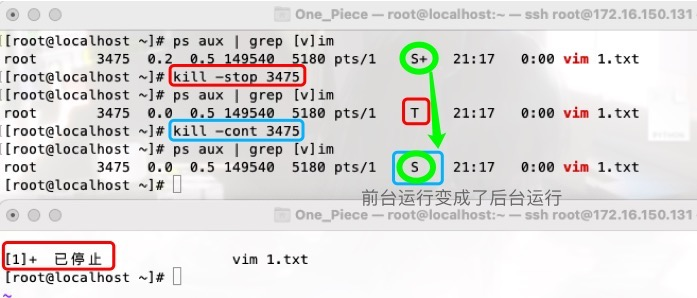
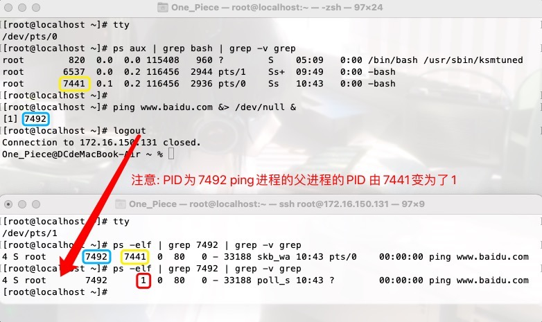
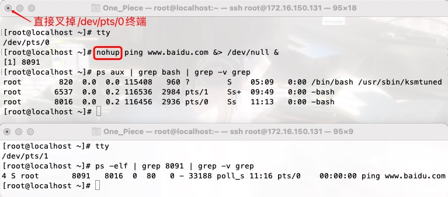
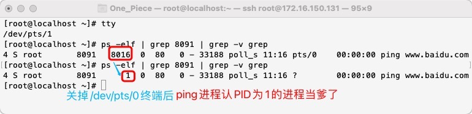
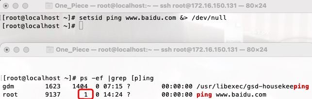
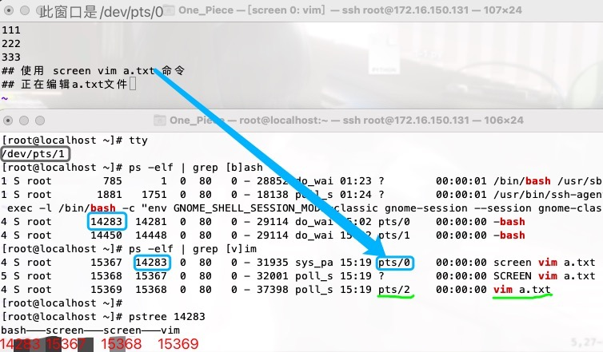

管理进程
优先级设置¶
nice命令设置的优先级不是程序最终的优先级, 只是优先级的修正数值
PRI: 代表这个进程可被执行的优先级,其值越小越早被执行
NI: 代表这个进程的nice值
NI可以通过nice命令设置,其表示进程可被执行的优先级的修正数值..
PRI值越小越快被执行,加入nice值后,将会使得PRI变为: PRI(new)=PRI(old)+nice
▲ 对某一命令设置nice值
`nice -n nice值 命令`
▲ 对已运行的进程设置新的优先级
`renice -nice值 进程PID`
PS: 若nice命令未指定优先级的调整值,则以缺省值10来调整程序运行优先级,既在当前程序运行优先级基础之上增加10..
给进程发送信号¶
只需掌握 1、9、15这3个信号!!!
kill -l 列出所有支持的信号
1) SIGHUP 9) SIGKILL 15) SIGTERM
HUP¶
有两个作用:
1> 挂起会话
2> 修改了配置文件,在不关闭该进程的情况下,重新加载配置文件
这里先详细阐述第二个作用,第一个作用后文会进行说明!
启动软件时会读取配置文件, 难道改完配置文件后, 要让软件重启进而重新读取修改后的配置文件吗？
no.. 重启,该软件提供的服务就断掉啦.. 可以通过该软件的进程发送HUP信号解决这个问题...
systemctl stop firewalld
systemctl disable firewalld
setenforce 0
ifconfig ens33 | grep inet ## -- 查看到服务端(vm虚机)的ip地址为172.16.150.131
yum install vsftpd -y
systemctl start vsftpd ## -- 开启ftp服务
systemctl status vsftpd ## -- 查看ftp服务状态
systemctl enable vsftpd ## -- 设置开机自启
## -- vsftpd此软件有个默认的共享文件夹 /var/ftp/
cd /var/ftp
ls ## -- 里面默认有个hub文件夹
mkdir /var/ftp/share
touch /var/ftp/share/a.txt
touch /var/ftp/share/b.txt
touch /var/ftp/share/aaa
[root@localhost ftp]# tree /var/ftp
/var/ftp
├── pub
└── share
├── aaa
├── a.txt
└── b.txt
## -- ftp://172.16.150.131 指向的就是 /var/ftp
在客户端(mac电脑)上,首先 ping 172.16.150.131看是否能ping通
然后在mac的浏览器上输入地址 ftp://172.16.150.131
点击`访达.app`按钮,以客人的身份访问,点击连接!成功!
现在我们需要将ftp服务默认的共享目录/var/ftp/换成 /var/ftp/share
## vim /etc/vsftpd/vsftpd.conf 在该配置文件最末尾添加 anon_root=/var/ftp/share
## 使用echo echo 'anon_root=/var/ftp/share' >> /etc/vsftpd/vsftpd.conf
## 使用sed 注意用的是单引号!! $最后一行 a添加
sed -i '$a anon_root=/var/ftp/share' /etc/vsftpd/vsftpd.conf
## 让配置文件生效,若通过 systemctl restart vsftpd 命令重启服务,会导致该进程的PID改变
[root@localhost ftp]# ps aux | grep [v]sftpd
root 1117 0.0 0.0 53292 712 ? Ss 20:02 0:00 /usr/sbin/vsftpd /etc/vsftpd/vsftpd.conf
kill -1 1117
然后通过浏览器重新以客人身份访问.就会得到 /var/ftp/share目录下的内容
"""
若将配置文件的内容搞乱了,将配置文件恢复出厂设置怎么做？
rm -rf /etc/vsftpd/vsftpd.conf
yum reinstall vsftpd -y
"""

KILL与TERM¶
kill 进程PID 默认发出的就是 -15的信号, 代表终止
kill -9 进程PID 有些进程用15的信号是杀不死的,发送9的信号强制杀死
kill命令和ftp程序都是软件,kill给ftp发了个信号过去...
ftp是否响应 取决于 ftp软件在开发时有没有设计捕捉此信号并作处理的功能..
15这个信号可能得不到应用软件响应,但9这个信号应用软件基本都会响应,不然这个软件就是病毒了...
Ps: 回顾下,处于D和Z状态的进程是杀不掉的..
多个虚拟终端,都开启了vim, 通过 pkill -9 vim 命令可以批量杀死..
补充¶
19) SIGSTOP 使进程进入T状态
18) SIGCONT 将停止的进程重新投入运行

关于HUP信号¶
给进程发送HUP信号, 可以让进程重新加载配置文件..
接下来主要讲解它的另外一个功能: 挂起会话
话题引入¶
远程连接开启了一个虚拟终端(提一嘴,用户登录成功后,会先开启一个名为bash的进程), 一通命令操作后, 关闭该终端(注意,不是exit命令退出),该终端窗口里执行的所有进程(bash进程连同其子进程)都会被强制关掉..
So,我们需要让进程脱离当前会话窗口session(通俗点,就是那个输入命令返回结果的交互式的命令行界面)而运行 换个说法,让我们的进程在后台一直运行,不要因为用户注销或者网络断开或者终端关闭而一起被干掉...
有两种解决思路:
思路1: 让进程忽略Linux HUP信号
思路2: 让进程运行在新的会话里, 从而不属于此终端的子进程, 就不会在当前终端挂掉的情况下一起被带走
有四种方式: 它们的原理本质上都一样 -- 让子进程认一个新的爹PID为1
○ 先不着急叉掉窗口,使用exit或logout命令正常退出终端
○ nohup 命令 &
○ setsid
○ (命令 &)
○ screen 命令
○ kill -9 父进程PID
▲ 验证直接叉掉窗口,该会话窗口/session/交互式窗口/虚拟终端的bash进程连同它的所有子进程都会一同挂掉..
## -- /dev/pts/0
"""
在第1个虚拟终端里
我们ping网址,将结果不管正确与否都丢到/dev/null黑洞中,并在后台运行
并执行了一个在后台运行的sleep命令
查看PID为6597的ping进程的父进程的PID为6331
查看得知PID为6331的进程是打开此虚拟终端/dev/pts/0产生的bash进程
"""
[root@localhost ~]# ping www.baidu.com &> /dev/null &
[1] 6597
[root@localhost ~]# sleep 3000 &
[2] 6859
[root@localhost ~]# ps -elf | grep 6597 | grep -v grep
4 S root 6597 6331 0 80 0 - 33188 poll_s 09:50 pts/0 00:00:00 ping www.baidu.com
[root@localhost ~]# ps aux | grep 6331 | grep -v grep
root 6331 0.0 0.2 116456 2944 pts/0 Ss 09:38 0:00 -bash
## -- /dev/pts/1
"""
在第2个虚拟终端里
同样能查询到ping进程和sleep进程的父进程,都是PID为6331的bash进程
"""
ps -elf | grep 6597 | grep -v grep
ps -elf | grep 6859 | grep -v grep
ps aux | grep 6331 | grep -v grep
## 该命令只是想验证,开启的每个虚拟终端都有对应的bash进程 pts/0对应6331 pts/1对应6537
[root@localhost ~]# ps aux | grep bash | grep -v grep
root 820 0.0 0.0 115408 956 ? S 05:09 0:00 /bin/bash /usr/sbin/ksmtuned
root 6331 0.0 0.2 116456 2944 pts/0 Ss+ 09:38 0:00 -bash
root 6537 0.0 0.2 116456 2936 pts/1 Ss 09:49 0:00 -bash
## 可以查询到 PID为6631的bash进程 有两个正在运行的子进程 ping 和sleep
[root@localhost ~]# pstree 6331
bash─┬─ping
└─sleep
将第1个虚拟终端 /dev/pts/0 的会话窗口叉掉(注意,不是exit正常退出),
在此session关闭的时候,会向此会话窗口里的bash进程及其子进程都发一个hup信号,
该hup信号的意思就是让它们都死掉.. 所以ping进程、sleep进程在第2个终端/dev/pts/1里就查询不到啦
[root@localhost ~]# tty
/dev/pts/1
[root@localhost ~]# ps aux | grep 6597 | grep -v grep
[root@localhost ~]# ps aux | grep 6859 | grep -v grep
[root@localhost ~]#
Ps: 在第1个终端/dev/pts/0里输入命令exit而不是直接叉掉,那么在第二个终端里依旧能查到ping进程..
exit、logout¶
养成良好习惯,先exit/logout正常退出后,保证该窗口没有任何远程连接了,再叉掉!!!
在centos7里内核只负责硬件部分的管理,上层运行的软件统一被systemd软件管理起来啦.
PID为1的进程就是systemd软件启动起来的..
当我们在/dev/pts/0终端输入命令exit或者logout , 正常退出该终端..
此终端里PID为7441的bash进程就会被kill关掉,但该bash进程的子进程ping托管给了PID为1的进程...
So,正常退出/dev/pts/0终端后,再叉掉该终端窗口,ping进程也会一直在后台运行...
别问为什么,linux就是这么设计的！！T_T

Ps: 往下在进行新的实验之前,记得 kill -9 7492 ...
nohup¶
nohup的用途就是让提交的命令忽略 hup 信号


nohup 的使用是十分方便的, 只需在要处理的命令前加上 nohup 即可...
但 通常 使用nohup的时候,会在命令最后加上&,让其在后台运行...
注意哦!
在直接叉掉终端时, 该终端bash的子进程会丢掉STDOUT(正常输出)、STDERR(错误输出)的链接.
标准输出和标准错误缺省会被重定向到 nohup.out文件中.
一般我们会在结尾加上"&"来将命令放入后台运行进而解决问题, 或者更改缺省的重定向文件名...
setsid¶
核心思想也是让进程忽略 hup信号..
setid直接将进程的父pid设置成1, 即让运行的进程成为init( centos7以前是init,centos是systemd )的子进程. 那么除非init/systemd结束, 该子进程才会结束, 当前进程所在的终端结束后并不会影响进程的运行..
即该运行的进程跟当前终端啥关系都没有了.. 它并不属于当前终端的子进程, 从而也就不会受到当前终端的Linux HUP信号的影响了.
注意哦! nohup需要在命令最后加&, setid可用可不用... setid一步到位,将运行进程的父进程变为了PID为1的进程..
实现了nohup运行命令后, 叉掉会话窗口的效果..

吐槽一下, 有个待解决的疑点, A终端后台运行 setsid ping www.baidu.com &> /dev/null & 命令, 交互式界面返回了[1] 9192, 将道理,按照往常的逻辑, 9192也就是这条运行命令的PID... 但结果9193才是此命令的PID!! why?
在子shell中提交任务¶
用括号将命令括起来提交... 能达到跟setsid同样的效果. 具体的底层原理等讲shell编程时再阐述..

screen!!¶
screen 命令
screen -S 窗口名
screen -lsscreen -r 窗口名/终端PID
ctrl+a+ctrl+d组合键
screen -x 窗口名/终端PID更多操作参考:
https://zhuanlan.zhihu.com/p/336727473screen部分内容...
yum install screen -y
在第一个终端运行命令 screen vim a.txt
在第二个终端中查看 14283 -- 15367 -- 15368 -- 15369
14283: 第一个终端的bash进程
15367: bash的子进程,在第一个终端运行的screen命令
15368: screen命令自个儿创建的子进程SCREEN
15369: SCREEN进程创建了一个新的窗口/dev/pts/2来运行vim a.txt命令

首先要知道,通过screen vim a.txt编辑后,正常:wq退出界面, 15367 -- 15368 -- 15369都会结束掉...
若在编辑过程中 意外 关掉第一个终端, 那么, pts/0的bash进程和其子进程screen会被杀掉;
但此时PID为15368的SCREEN进程脱离pts/0终端运行, 开始依托于init/systemd进程开始运行, 即SCREEN进程的父进程变为PID为1的进程..
## -- 在第二个终端中查看
[root@localhost ~]# ps -elf | grep [v]im
5 S root 15368 1 0 80 0 - 32001 poll_s 15:29 ? 00:00:00 SCREEN vim a.txt
4 S root 15369 15368 0 80 0 - 37398 poll_s 15:29 pts/2 00:00:00 vim a.txt
所以,15368和15369的进程并没有死掉... 而且我们可以恢复意外关闭的vim编辑界面的窗口继续编辑..
[root@localhost ~]# screen -ls
There is a screen on:
15368.pts-0.localhost (Detached)
1 Socket in /var/run/screen/S-root.
## -- 打开vim界面继续编辑.. 当然是在pts/2终端继续执行的vim命令..
[root@localhost ~]# screen -r 15478
## -- 编辑完后 :q正常退出 pts/2窗口会自动关闭！! 15368和15369进程也会结束掉..
[root@localhost ~]# ps -elf | grep [v]im
[root@localhost ~]#
screen 的其他玩法 screen -S 窗口名
[root@localhost ~]# tty
/dev/pts/0
[root@localhost ~]# screen -S new_s
## -- 回车,执行命令 /pts/0的终端会闪烁一下,跳出一个空白的终端界面
## -- 可以观察掉,此终端界面是screen创建的新终端/pts/1
[root@localhost ~]# tty
/dev/pts/1
[root@localhost ~]# ps -elf | grep [b]ash
1 S root 785 1 0 80 0 - 28852 do_wai 01:23 ? 00:00:01 /bin/bash...
1 S root 1881 1751 0 80 0 - 18138 poll_s 01:24 ? 00:00:01 /usr/bin/ssh-agent...
4 S root 16943 16941 0 80 0 - 29114 do_wai 16:44 pts/0 00:00:00 -bash
4 S root 17020 17019 0 80 0 - 29142 do_wai 16:45 pts/1 00:00:00 /bin/bash
[root@localhost ~]# ps -elf | grep new_s | grep -v grep
4 S root 17018 16943 0 80 0 - 31935 sys_pa 16:45 pts/0 00:00:00 screen -S new_s
5 S root 17019 17018 0 80 0 - 31968 poll_s 16:45 ? 00:00:00 SCREEN -S new_s
# -- 梳理下此进程树的关系
"""
------------------------------------------------
命令 PID PPID
------------------------------------------------
pts/0 16943
screen -S new_s 17018 16943
SCREEN -S new_s 17019 17018
pts/1 17020 17019
pstree 17020
------------------------------------------------
"""
[root@localhost ~]# pstree 16943
bash───screen───screen───bash───pstree
在screen创建的pts/1终端运行命令n = 0;while true;do ((n++));sleep 1;echo $n;done;,
ctrl+a ctrl+d连贯敲击.. 回到pts/0终端,可以做其他事情啦...
哪怕关闭了pts/0终端,在pts/1终端运行的命令也不会终止,会继续运行...
关闭pts/0终端, 重新连接上服务器, screen -ls screen -r new_S 可以进入pts/1终端看运行状况等等...
[root@localhost ~]# tty
/dev/pts/0
[root@localhost ~]# screen -S new_s
[detached from 17019.new_s] ## -- 脱离new_s窗口
[root@localhost ~]#
还有个骚操作..
小明正处于new_S窗口, 小川远程连接服务器后 screen -x new_s, 两边可以同步显示操作! Amazing..
管理后台进程¶
此部分了解即可.. 后台进程的管理通常会借助screen命令.
& 后台运行
jobs 查看 当前终端 里提交的后台进程, 注意哦,是当前终端
ctrl+z 将前台的进程挂起(暂停 T)到后台 注意哦,ctrl+c是结束进程
fg %作业编号 将后台的进程调到前台运行
bg %作业编号 将后台挂起(T)的进程在后台运行
[root@localhost ~]# sleep 3000 &
[1] 20265
[root@localhost ~]# jobs
[1]+ 运行中 sleep 3000 &
## -- 在vim编辑界面 ctrl+z 将前台的进程挂起(暂停)到后台
## -- 中括号内的编号就是作业编号, %1代表作业1
[root@localhost ~]# vim b.txt
[2]+ 已停止 vim b.txt
[root@localhost ~]# jobs
[1]- 运行中 sleep 3000 &
[2]+ 已停止 vim b.txt
## -- 调到前台运行后,ctrl+z就在前台结束了该进程
[root@localhost ~]# fg %1
sleep 3000
^C
[root@localhost ~]# jobs
[2]+ 已停止 vim b.txt
## -- 在vim页面 :q 退出后 该进程就结束了
[root@localhost ~]# fg %2
vim b.txt
[root@localhost ~]# jobs
演示下杀死进程 kill -9 %作业编号
[root@localhost ~]# vim c.txt
[1]+ 已停止 vim c.txt
[root@localhost ~]# jobs
[1]+ 已停止 vim c.txt
[root@localhost ~]# ps aux | grep [v]im
root 20469 0.1 0.5 149548 5184 pts/0 T 22:32 0:00 vim c.txt
# -- 因为vim命令是交互式的,应该在前台运行,没法让其在后台运行
[root@localhost ~]# bg %1
[1]+ vim c.txt &
[root@localhost ~]# jobs
[1]+ 已停止 vim c.txt
[root@localhost ~]# kill -9 %1
[1]+ 已停止 vim c.txt
[root@localhost ~]# jobs
[1]+ 已杀死 vim c.txt
演示bg命令
## -- 在第一个终端执行
# ctrl+z后,该进程到后台挂起,不会再有信息输入到/mnt/a.txt中!!
[root@localhost ~]# ping www.baidu.com &>> /mnt/a.txt
^Z
[1]+ 已停止 ping www.baidu.com &>>/mnt/a.txt
[root@localhost ~]# jobs
[1]+ 已停止 ping www.baidu.com &>>/mnt/a.txt
## -- 解决方案: kill发送一个18）SIGCONT继续的信号给该进程 或者使用 bg命令
[root@localhost ~]# bg %1
[1]+ ping www.baidu.com &>>/mnt/a.txt &
## -- 在后台继续运行, tail -f /mnt/a.txt 可以动态查看文件里的内容进行验证
管道¶
管道用于进程间通信
管道操作符号 "|" 主要用来连接左右两个命令. 将左侧命令的标准输出 stdout 作为右侧命令的标准输入 stdin .
注意哦! 无法传递标准错误输出给右侧命令..
管道练习¶
▲ 题1:统计当前/etc/passwd文件中用户使用的shell类型
[root@localhost ~]# cat /etc/passwd | head -1
root:x:0:0:root:/root:/bin/bash
[root@localhost ~]# awk -F: '{print $7}' /etc/passwd | sort | uniq -c
3 /bin/bash
1 /bin/sync
1 /sbin/halt
39 /sbin/nologin
1 /sbin/shutdown
▲ 题2:统计网站的访问情况
netstat -an |grep :80 |awk -F":" '{print $8}'|sort |uniq -c
▲ 题3:打印当前所有的IP
[root@localhost ~]# ip addr | grep 'inet ' | awk '{print $2}' | awk -F "/" '{print $1}'
127.0.0.1
172.16.150.131
▲ 题4:打印根分区已用空间的百分比(仅打印数字)
[root@localhost ~]# df | grep '/$' | awk '{print $5}' | awk -F"%" '{print $1}'
27
▲ 题5:统计网站的访问最多的ip top 10
## -- 思路: 打印所有访问的过来的ip | 排序 | 去重 | 倒序排序 | 取前10
awk '{print $1}' access.log |sort |uniq -c | sort -rn | head
管道中的tee¶
## -- ifconfig命令的结果丢到了a.txt文件中,但屏幕上没有显示啦
ifconfig &> /opt/a.txt
## -- ifconfig命令的结果不仅会丢到了b.txt文件中,屏幕上也会显示一份
## tee不加选项默认是覆盖 `tee -a`是追加
ifconfig | tee /opt/b.txt
xargs¶
xargs参数传递, 让一些不支持管道的命令可以使用管道技术!!!
所有的命令都能将命令的结果丢到管道里, 但不是所有的命令(eg: rm mv cp)都能从管道中拿出结果做处理!!!
那如何是好？结合 xargs命令 使用!!
详情请跳转: 4_文件管理之命令补充.md find结合xargs 这部分的内容！！
[root@localhost ~]# which cat | xargs ls -l
-rwxr-xr-x. 1 root root 54080 11月 17 2020 /usr/bin/cat
## -- 必须的进入/opt目录才行 `ls /opt | xargs rm -rf`是失败的
[root@localhost ~]# cd /opt
[root@localhost opt]# ls
a.txt c.txt
[root@localhost opt]# ls | xargs rm -fv
已删除"a.txt"
已删除"c.txt"
[root@localhost opt]# ls
[root@localhost opt]#
僵尸进程与孤儿进程¶
在UNIX/Linux中, 每个进程都有一个父进程..
僵尸进程是什么？¶
首先要明白, 当一个子进程开启起来以后, 它的运行与父进程是 异步并发 的, 彼此互不影响, 谁先死都不一定...
总结来说,若直接叉掉终端, 父进程bash和其子进程都会结束掉.. 正常情况下,父进程先死,子进程会变成孤儿进程; 子进程先死,子进程会先变为僵尸进程再完全死去,对父进程没影响
第二点, linux操作系统的设计规定: 父进程应该具备随时获取子进程状态的能力
假设子进程先于父进程运行完毕,若OS将子进程的所有资源全部释放掉,父进程就找不到该子进程啦...
So,linux当子进程先于父进程运行完毕/死掉时,OS会将子进程占用的重型资源都释放掉( eg:关闭已打开的文件,舍弃已占用的cpu、内存、交换空间等 ), 但是会保留一部分子进程的关键状态信息( eg: PID、退出状态、已运行时间等 ), 此时子进程就相当于死了但是没完全死,没死干净, 因而得名"僵尸进程"...
僵尸进程是linux操作系统出于好心, 为父进程准备的一些子进程的状态数据, 专供父进程随时查阅
也就是说"僵尸进程"是linux系统的一种数据结构, 所有的子进程结束后都会进入僵尸进程的状态
wait / waitpid¶
僵尸进程残存的那些数据(eg PID)是需要回收的! 当父进程觉得自己无需查看僵尸进程的数据,觉得留着僵尸进程的数据没啥用时,会由父进程发起一个 系统调用 wait / waitpid 来通知linux操作系统来清理这些僵尸进程..
这里针对父进程有三种情况需要讨论:
1> 一些优秀的开源软件 eg: nginx , 这些软件在开启子进程时
父进程内部都会及时调用wait/waitpid来通知操作系统回收僵尸进程
所以我们通常看不到优秀的开源软件堆积僵尸进程
2> 水平良好的程序员开发的应用程序, 知道父进程要对子进程负责, 会在父进程内考虑wait/waitpid
但发起系统调用wait/waitpid的时间可能慢了些, 我们只需要发送17号信号提醒该父进程就行..
3> 垃圾程序员开发应用程序时,压根没设计进程对OS的wait/waitpid调用... 我们发信号提醒也没用,压根不会响应!
情况3可能会出现一个非常奇怪的现象:
计算机内存和硬盘充足、cpu空闲. 但是启动新的软件就是无法启动起来.
究其根本原因就是堆积了太多僵尸进程, 僵尸进程虽然对内存、硬盘、cpu消耗很小很小, 但一个僵尸进程就要占用一个PID, linux操作系统中PID号是有限的!!!
清理僵尸进程¶
OS收到父进程发起的wait / waitpid系统调用后, 会释放掉僵尸进程占用的资源..
针对上面情况2, 我们可以通过命令 kill -CHLD 父进程PID 发送 17) SIGCHLD信号给父进程, 让其赶快发起系统调用来通知OS清理僵尸进程!!
针对上面的情况3, 父进程不会响应 17) SIGCHLD 信号, 只能杀掉父进程, 让僵尸子进程被PID为1的顶级进程systemd收养!! systemd非常靠谱, 会定期发起系统调用wait/waitpid来通知操作系统清理僵尸...
若累积的僵尸很少,不会直接选择杀父进程导致服务关闭, 会在软件升级的时候(优化软件),将该父进程干掉!!
孤儿进程¶
父进程先死掉, 而它的一个或多个子进程还在运行. 那么那些子进程将成为孤儿进程..
孤儿进程将被PID为1的顶级进程init / systemd所收养, 并由顶级进程对它们完成状态收集工作..
实验验证¶
linux 僵尸进程和孤儿进程的设计没有问题, 有问题的是开发应用程序的程序员..Hhh
看到出现僵尸进程不用紧张,僵尸进程个数一直在增加才应该紧张...
▲ 孤儿进程验证
A终端
后台运行命令,`ping www.baidu.com &> /dev/null &`
B终端
`ps -elf | grep [p]ing` ## 找到PID与PPID
`kill -9 PPID` ## 干掉ping进程的PPID,也就是终端A的bash 终端A会断开与服务器的连接
`ps -elf | grep [p]ing` ## 再执行此命令,发现ping进程的PPID变为了1
▲ 僵尸进程验证
## -- 终端A上操作
[root@localhost ~]# vim a.py
[root@localhost ~]# cat a.py
## 父进程开了3个子进程,父进程活10000秒,每个子进程都活10秒
from multiprocessing import Process
import os
import time
def task():
print("son -> ",os.getpid())
time.sleep(10)
if __name__ == "__main__":
for i in range(3):
p = Process(target=task)
p.start()
print("father -> ",os.getpid())
time.sleep(10000)
## 10秒后,3个子进程会变成僵尸进程
[root@localhost ~]# python a.py
('father -> ', 24754)
('son -> ', 24756)
('son -> ', 24757)
('son -> ', 24755)
## -- 终端B上操作
[root@localhost ~]# ps aux | grep 24754 | grep -v grep
root 24754 0.0 0.5 151308 5812 pts/1 S+ 12:58 0:00 python a.py
[root@localhost ~]# ps aux | grep 24755 | grep -v grep
root 24755 0.0 0.0 0 0 pts/1 Z+ 12:58 0:00 [python] <defunct>
[root@localhost ~]# ps aux | grep 24756 | grep -v grep
root 24756 0.0 0.0 0 0 pts/1 Z+ 12:58 0:00 [python] <defunct>
[root@localhost ~]# ps aux | grep 24757 | grep -v grep
root 24757 0.0 0.0 0 0 pts/1 Z+ 12:58 0:00 [python] <defunct>
## 证明僵尸进程杀不掉
[root@localhost ~]# kill -9 24757
[root@localhost ~]# ps aux | grep 24757 | grep -v grep
root 24757 0.0 0.0 0 0 pts/1 Z+ 12:58 0:00 [python] <defunct>
## 再使用top命令 查看zombie字段的值 值为3
## 退出top界面
## kill -9杀掉父进程,或者在终端A的交互式界面执行ctrl+c结束掉py程序
[root@localhost ~]# kill -9 24754
## 再使用top命令 查看zombie字段的值 值为0